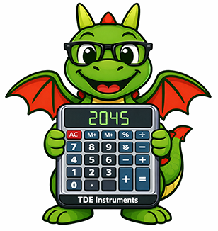

A customizable Windows 10/11 scientific calculator clone designed for Trinity Desktop Environment (TDE) & Linux.
Add the official repository to your system to receive regular automated updates via apt:
echo "deb [trusted=yes] https://seb3773.github.io/calc/ stable main" | sudo tee /etc/apt/sources.list.d/tde-calc.list
sudo apt update
sudo apt install tde-calcCompatible with Q4OS, Debian, Devuan, Ubuntu, Linux Mint and all Debian-based distributions.
Choose the format best suited for your setup:
* Note: The Q4OS installer (.qsi) automatically configures the APT repository during installation for future updates.
Standard, Scientific, Programmer (HEX/DEC/OCT/BIN & bit toggles), Date Calculation, and Statistics.
Comprehensive converter for Volume, Length, Weight/Mass, Temperature, Energy, Area, and Speed.
Visual list of past calculations and results with memory recall and expression recovery.
GNU Multiple Precision Arithmetic Library (GMP) backend for accurate high-precision arithmetic.
Embedded pre-decoded raw pixel pipeline with ultra-fast ZX0 in-memory decompression.
Dark/Light themes, custom and LCD fonts, icon styles (Default, Inverted, Color), and layout borders.